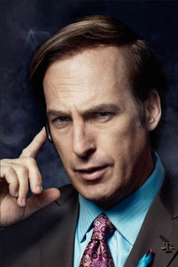

Jesse Pinkman

Jesse Pinkman
Acteur : Aaron Paul
Rôle : Personnage principal de Breaking Bad
Description :
Ancien élève de Walter White, Jesse est attiré par l’argent. Issu d’une famille bourgeoise qui l’a chassé, recalé aux examens de chimie, son sens du business l’a pourtant poussé à devenir fabricant de méthamphétamine. Repéré par hasard par son ancien prof, Jesse va être contraint de former avec lui un duo insolite. Paumé, comique malgré lui, sa bêtise l’amène à des situations de plus en plus loufoques. Admiratif du talent de Walt, Jesse devient alors son partenaire indispensable, en réalisant ce qu’il sait faire : dealer, un art et il en est fier.
Walter White
Walter White
Acteur : Bryan Cranston
Rôle : Personnage principal de Breaking Bad
Description :
Walter est un professeur de chimie de 50 ans au troisième stade d'un cancer du poumon dont le traitement coûte trop cher pour lui. Pour assurer une vie plus confortable à sa famille après sa mort, il décide d'utiliser ses connaissances en chimie pour produire de la méthamphétamine et la revendre.
Hank Schrader
Hank Schrader
Acteur : Dean Norris
Rôle : Seconds rôles de Breaking Bad
Description :
Beau frère de Walter White. Membre des stups, il est tenace et très sympathique.
Skyler White
Skyler White
Acteur : Anna Gunn
Rôle : Seconds rôles de Breaking Bad
Description :
Skyler, la femme de Walter, est une mère au foyer et enceinte de son deuxième enfant. Entre ses échographies et ses tentatives d’écriture, elle prend soin de ravitailler son fils ado et son mari en bacon végétarien. Alors que sa grossesse arrive à son terme, Skyler s’inquiète pour son mari, au comportement de plus en plus étrange.
Walter White Jr.
Walter White Jr.
Acteur : RJ Mitte
Rôle : Seconds rôles de Breaking Bad
Description :
C'est le fils de Walter et de Skyler. Il est handicapé par une encéphalopathie, entraînant des difficultés d'elocution et motrice. Il marche avec des béquilles. Il a beaucoup d'admiration pour son oncle, Hank.
Gustavo Fring
Gustavo Fring
Acteur : Giancarlo Esposito
Rôle : Autres personnages
Description :
Gustavo est le "grand patron" de tout le marché de la meth au nord de la frontière mexicaine. C'est un homme méticuleux aux couvertures imparables, contrairement à la personnalité incontrôlable de Tuco Salamanca. Il respecte le sang froid et la minutie de Walter, et va jusqu'à lui confier toute sa production de meth. Il est également directeur de la chaîne de restaurants "Los pollos hermanos".
Saul Goodman
Saul Goodman
Acteur : Bob Odenkirk
Rôle : Autres personnages
Description :
Saul est un avocat corrompu qui va s'associer avec Walter et Jesse, d'abord pour les aider à sortir l'un de leurs dealers de prison, puis dans la distribution de leur produit et le blanchiment de leur argent.
Mike Ehrmantraut
Mike Ehrmantraut
Acteur : Jonathan Banks
Rôle : Autres personnages
Description :
Garde du corps de Gustavo Fring colabore avec Jesse et Walt.